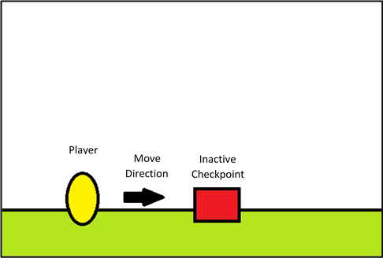
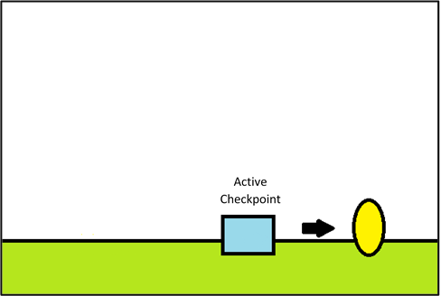
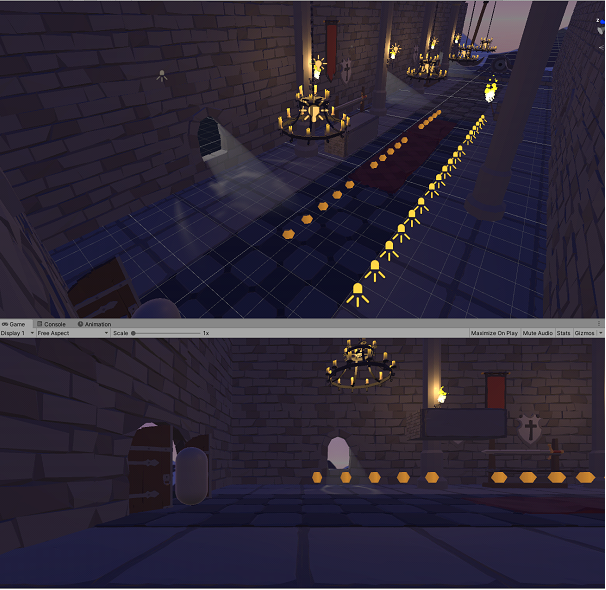

The checkpoint system allows the player to save character progress through the level by changing the player’s respawn point. By passing a checkpoint, it will activate and from then until a further checkpoint is activated, when the player dies, they will respawn at the checkpoint.
The checkpoint has two states, active and inactive. As stated earlier, when the player walks past the checkpoint, it will activate and switch states. When changing from one state to the other, the checkpoint will visibly alter to show that it has changed states.
The checkpoint design is based on a standing torch. It has four wooden poles as the base of the torch that intersect near the top of the torch, before spreading back out at the top. The top section holds a metal container that will be the part that gets set alight while the checkpoint is active.
Before Activation
After Activation
As a player, I want to have my level progress retained on death so that I don’t have to re-do certain sections
As a player, I want checkpoints to show that it is activated so that I know my progress is saved
Scenario: Player comes across a checkpoint
Given I’m a player, when I walk across a checkpoint, the checkpoint becomes active and when this happens, the checkpoint visibly changes showing that it is activated
Ability items are additional elements that are made to assist players in completing obstacles and progressing throughout the game. There will be multiple items, all of which contain different ‘powers/abilities’ that will support and enhance a player’s performance. Some may allow a player to progress at a faster speed, give them high/double jump capabilities, give them full immunity to any threats or some may even allow them to rejuvenate their health but all items are only effective temporarily. When a player obtains an ability item, they will experience the effects of that specific item for a short period of time and are required to make the most use of that ability before the duration of the effects run out.
This ability item is in the form of a ‘potion bottle’ and its effect will enhance a player’s performance by increasing the speed at which they progress throughout the level. This may benefit a player’s completion time.
This ability item is in the form of a ‘potion bottle’ and will give players the ability to jump higher (than the standard jump control) in order to successfully handle a variety of obstacles.
This ability item is in the form of a ‘potion bottle’ and will allow players total immunity for a short period of time. In cases where the player will come into contact with threats such as enemies or traps, they’ll be able to run by it without any health damage if they’re under the effects of an ability item.
This ability item is also in the form of a ‘potion bottle’ and it will instantly restore a player’s health bar at its fullest capacity. This will benefit a play by reducing their probability of dying earlier in the game.
This ability item is in the form of food products, such as fruits and meat. The effects of these items will slowly increase a fraction of the player’s health. This is different to ability item #4 as it does not fully restore a player's health but only a small portion of it, hence the possibility of handling great damages is still probable.
As a player, I want to be able to use each ability item to my advantage in order to successfully complete a level.
Player practices tutorial level - Given I attempt to complete the tutorial level, I will need to jump, run and evade any obstacles I am to encounter. When I obtain an ability item and am faced with challenges such as traps and enemies, I'll need to manipulate the ability item that I’ve collected in a way that will increase my chances of success for the completion of this level. After the ability item has lost its effects, I will have completed the objective of this level with the extra support of such advantageous items.
Ability items will be specifically allocated at certain locations in the games and players will where come to find them as they progress throughout the game. These items should be visible enough for players to recognise what it is that they are running towards. Once having obtained these items, players are expected to effectively use the ability that they are granted with to their advantage in order to successfully complete the level.
The first level of ‘Plunderer’ is designed to let the player test what they learnt during the tutorial level and see if they understand the game’s mechanics in practise. Nothing new will be introduced and all mechanics will be at their simplest level so that users will not feel overwhelmed. There will only be a few enemies and traps, and the level will be linear in design so that the exit can be easy to find. The player will need to use all movement inputs of the character to complete the level. This would most likely be the area where users first experience the death mechanic, as it is unlikely, but not impossible, for them to die during the tutorial.
The level starts upon the character entering the castle into the entrance hallway. Making their way through the hallway they will jump over patrolling enemies, then over a spike fall Trap. Jumping over another enemy after, they will come across a saw-blade trap. They will have to time when to move pass the blade. There is then another enemy in their way to get pass. The level ends when the player reaches the doorway at the end of the hallway.



Scenario One: As a player, I want to be able to clear the level, so I can have fun playing the game.
Scenario Two: As a player, I also want to be challenged, so I feel like I achieved something.
Scenario One: Player starts level
Since the player has started the level, they have been shown the mechanics of the game in the tutorial. The first level keeps these mechanics as simple as in the tutorial, so that players have to knowledge to be able to clear the level.
Scenario Two: Player encounters enemies and traps
Since players have been shown how traps and enemies’ function, they should be able to clear them. However, the level is less structured then the tutorial, so players are challenged to find the solution to pass obstacles themselves.